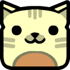
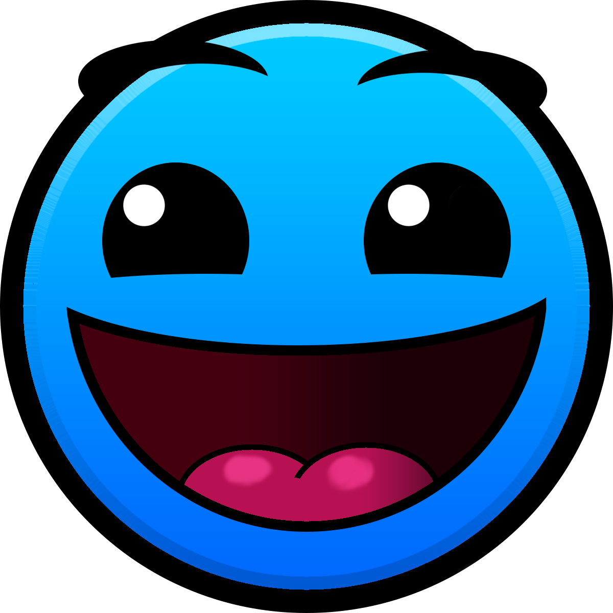
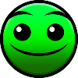
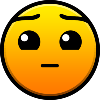
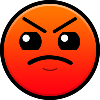
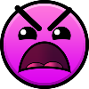
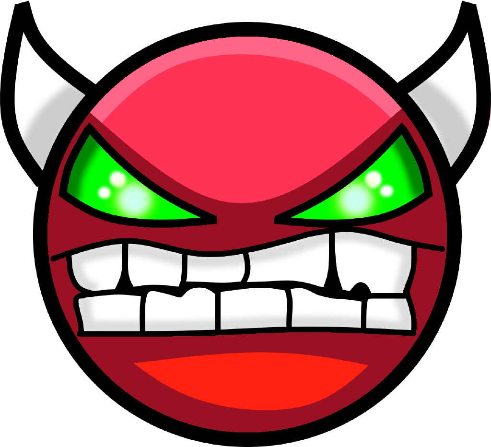
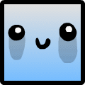

|  | Niveaux de RobTop |
Les niveaux de RobTop sont des niveaux par défaut proposés par le développeur du jeu, comme par exemple Stereo Madness, Clutterfunk ou Clubstep.
| Difficulté | Nom du niveau |
|  | Stereo Madness |
| Back On Track | |
|  | Polargeist |
| Dry Out | |
|  | Base After Base |
| Can't Let Go | |
|  | Jumper |
| Time Machine | |
| Cycles | |
| Blast Processing | |
| Geometrycal Dominator | |
|  | XStep |
| Clutterfunk | |
| Theory of Everything | |
| Electroman Adventures | |
|  | Clubstep |
| Hexagon Force | |
| Electrodynamix | |
| Theory of Everything 2 | |
| Deadlocked | |
| Fingerdash | |
| Dash |
|  | Niveaux pour progresser |
Voici une liste de niveaux que nous avons faite pour progresser. Certains niveaux sont directement dans le site tandis que d'autres redirigeront sur le wiki.
Pour progresser dans tous les styles de gameplay il faut faire des niveaux variés. Faites la liste ci-contre pour progresser en tout. |
Le Cube est le mode de jeu principal de Geometry Dash, il est donc essentiel de progresser dans ce type de gameplay. Voila les niveaux à faire. |
|
Le Ship peut parfois être très difficile dans certains niveaux donc il est essentiel de progresser dans de mode de jeu. |
La wave est un mode de gameplay qui est souvent très difficile. Voici 4 niveaux pour progresser en Wave. |